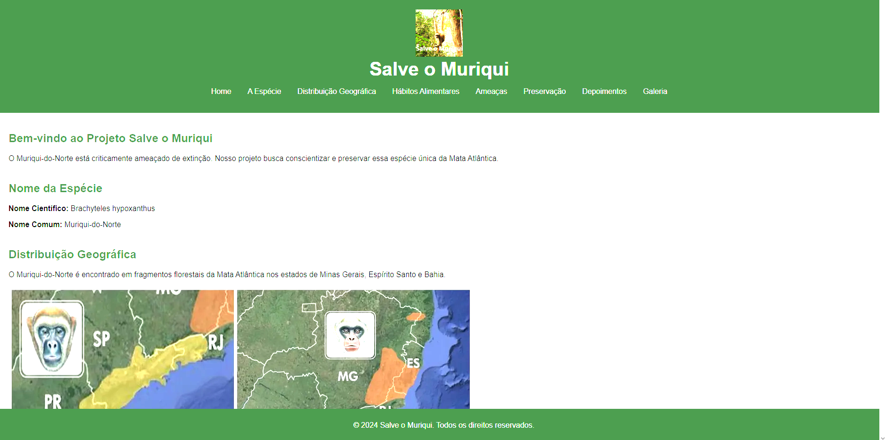

Sobre a atividade: Nosso objetivo nessa atividade era compreender a ameaça a fauna e escolher um dos animais que estão ameaçados de extinção, escrevendo sobre eles em um site alguns dos tópicos decidos pelo professor. Eu escolhi fazer do muriqui.
Critérios: C3, C4, H14, H15, H22 e H23
Sobre a atividade: Trabalho realizado sozinho, com o intuito de apreder sobre a radiotividade e seus impactos negativos, neste estudo, onde pesquisamos 10 desastres que ocorreram ao redor do mundo, descrever como ocorreu o acidente, suas causas, prejuízos e como está atualmente.
Critérios: C3, H14 e H15
Sobre a atividade: Atividade onde fizemos um experimento, usando uma lata de refri, prego, um pequeno pedaço de madeira, óleo, fósforo entre alguns outros materiais. O objetivo dessa atividade era: Compreender as leis da termodinâmica através de pesquisa teórica, exemplos e descrição de experimentos.
Critérios: C3, H14 e H15